Teseo
Il progetto
E se riparare diventasse più semplice che ricomprare?
Teseo nasce da un problema tanto semplice quanto diffuso: quando si rompe un piccolo componente, spesso siamo costretti a sostituire un oggetto ancora perfettamente funzionante. Un’abitudine alimentata non dalla mancanza di volontà, ma dalla difficoltà di trovare ricambi e soluzioni accessibili.
Da qui nasce Teseo, una piattaforma digitale che connette le persone a una rete di FabLab e laboratori di stampa 3D locali, trasformando una tecnologia spesso percepita come complessa in un servizio semplice e accessibile. Attraverso lo smartphone, l’utente può inquadrare l’oggetto danneggiato, identificare il componente mancante e recuperarne o generarne il modello 3D. La piattaforma individua un laboratorio nelle vicinanze, dove il pezzo viene prodotto. L’intero processo, dalla richiesta alla stampa, può essere seguito direttamente dall’applicazione. Anche un singolo componente può fare la differenza: nel caso studio di una sedia da ufficio, la sostituzione di una rotella attraverso la stampa 3D permette di ridurre le emissioni stimate fino al 95%, evitando sprechi e costi inutili.
Nato come progetto universitario e successivamente selezionato e presentato alla Milano Digital Week, Teseo dimostra come il design possa mettere in relazione persone, tecnologie e territorio per ripensare le nostre abitudini quotidiane.
Teseo. Una seconda vita agli oggetti, a chilometro zero.
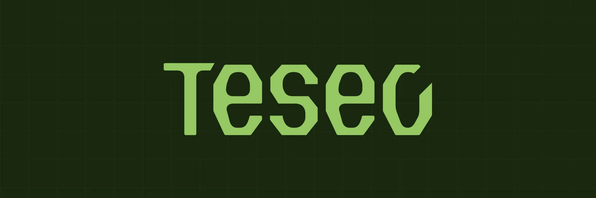
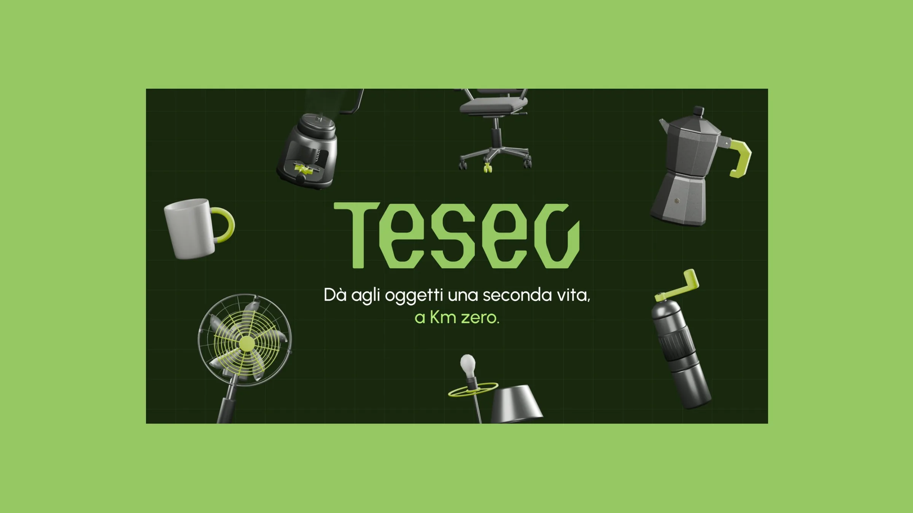
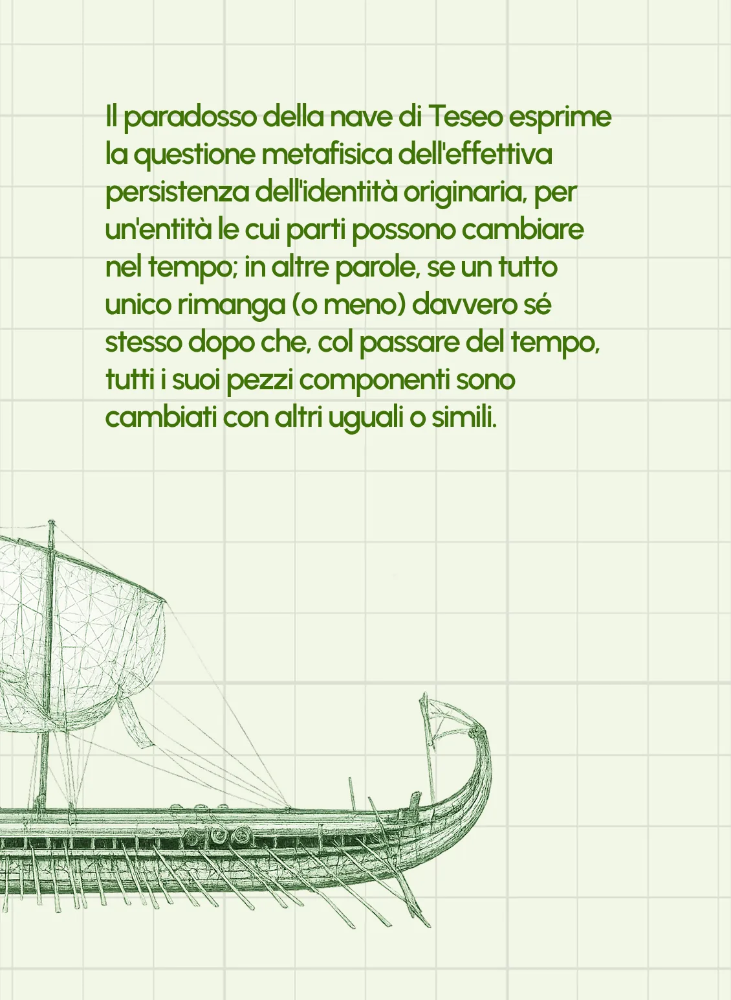
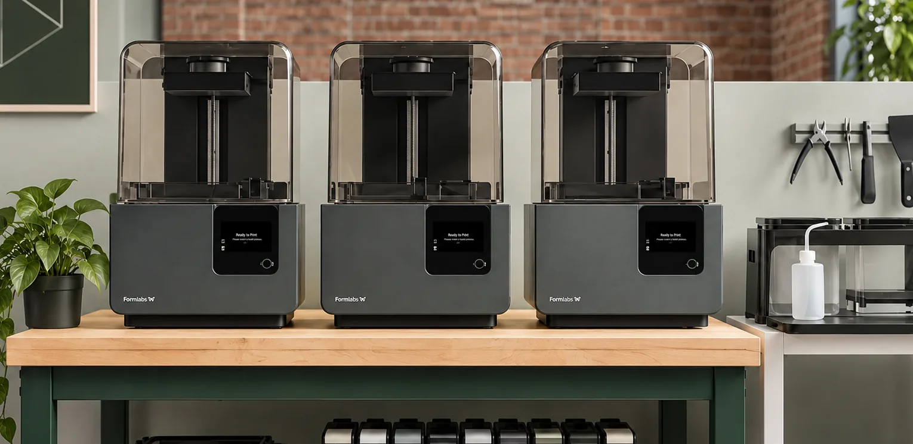
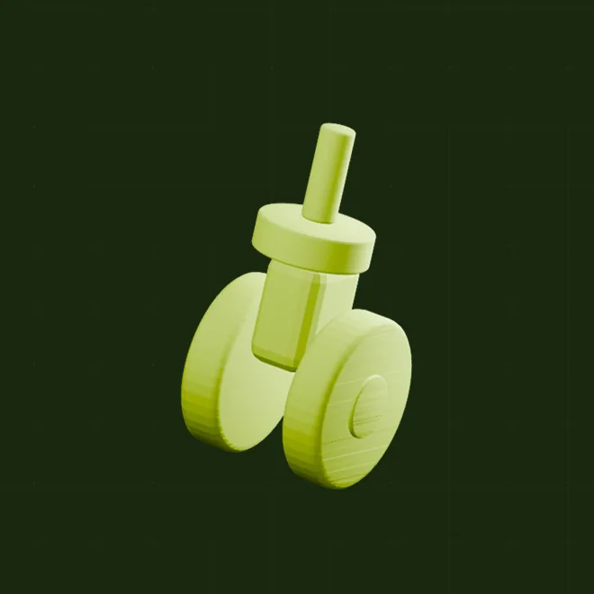
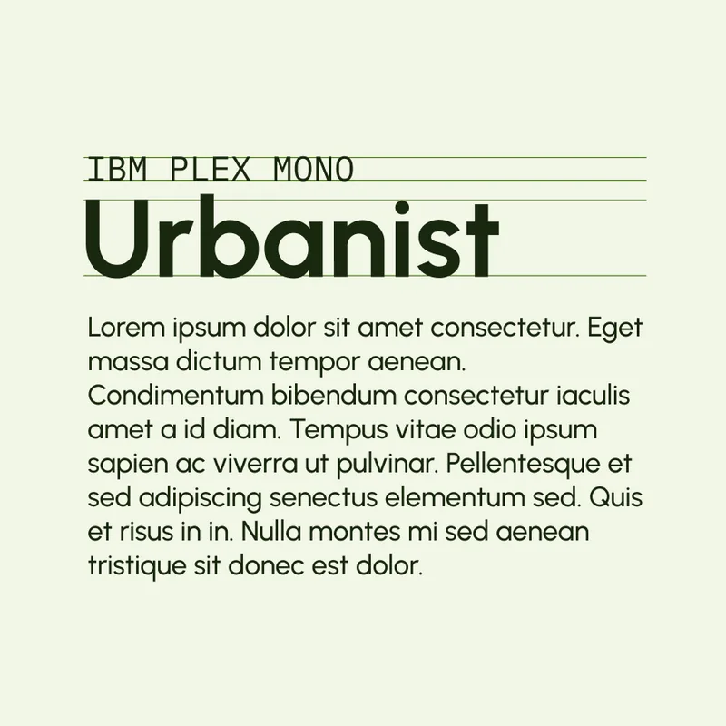
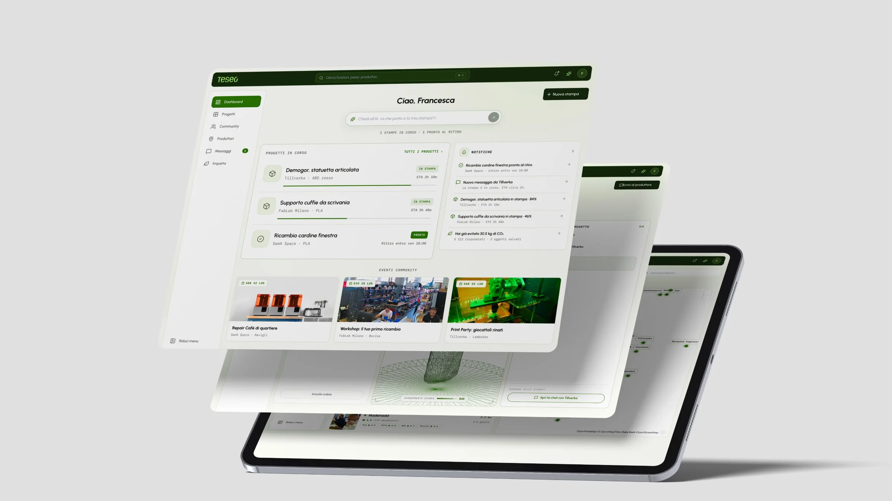
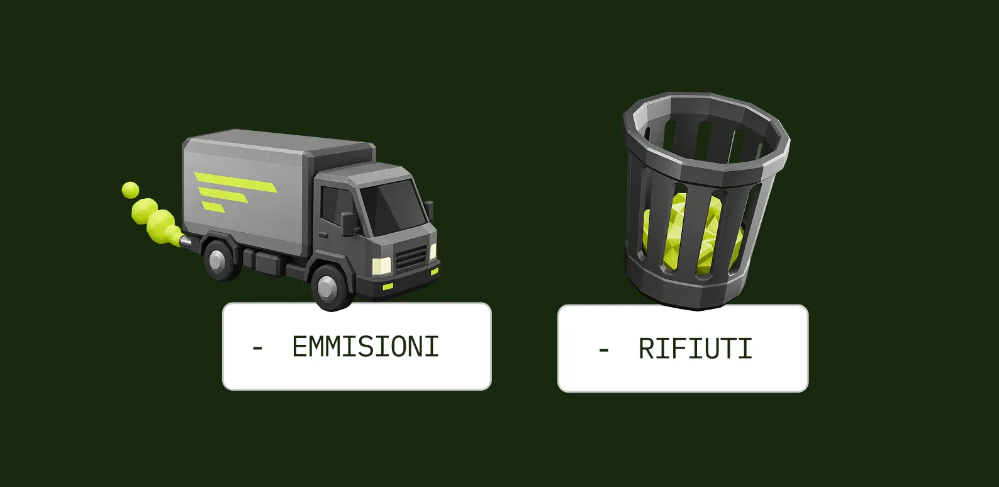
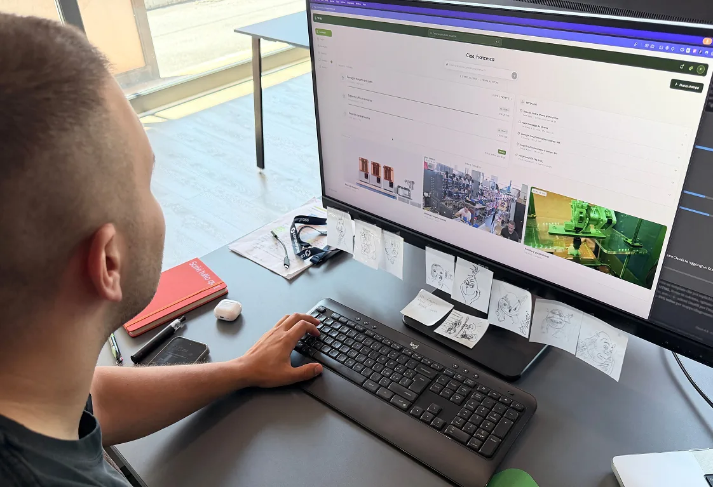
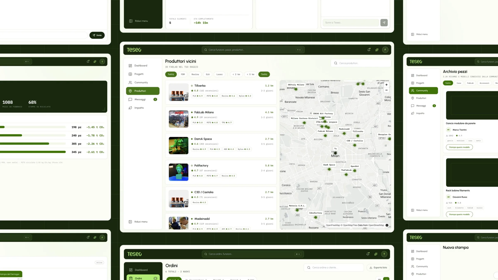
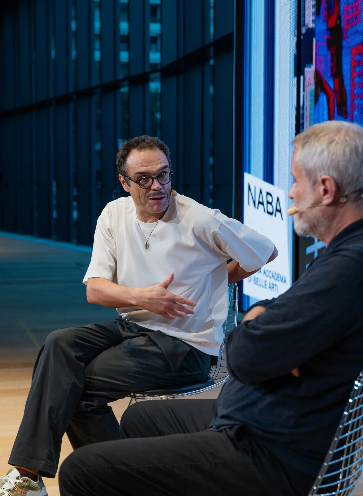
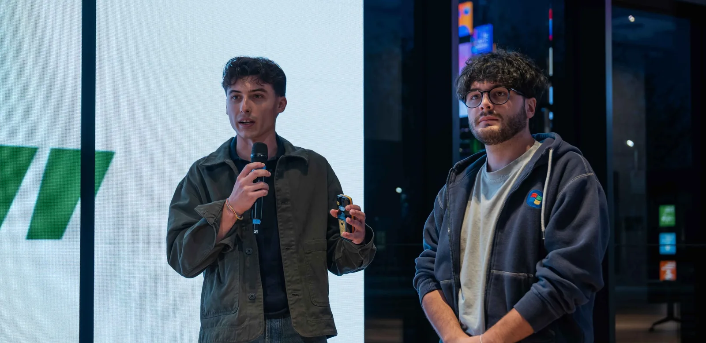
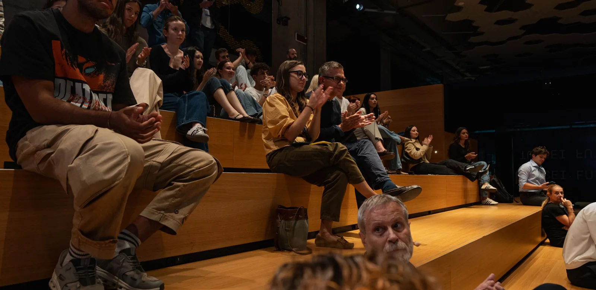
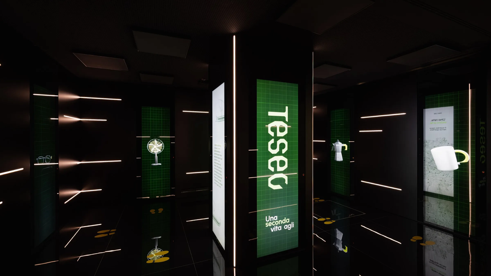